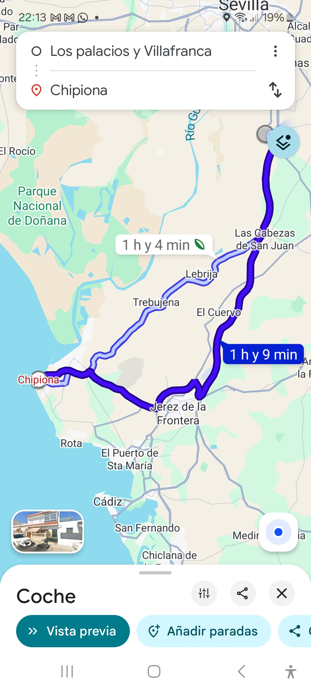
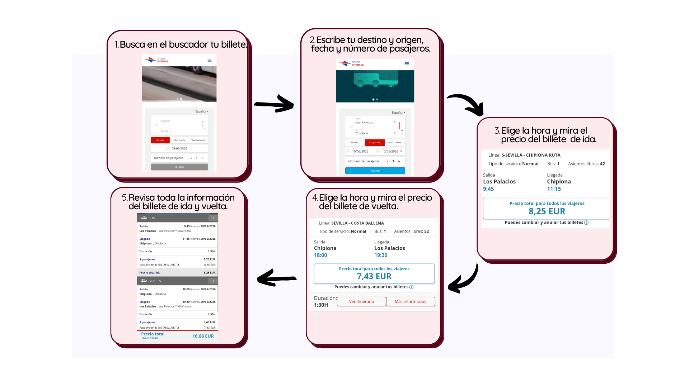

Viaje a Chipiona
Por fin ha llegado el momento de planificar nuestro viaje a la playa ahora que ya somos unos expertos marinos.
¿Qué os parece ir a Chipiona en autobús? Para ello vamos a ver dónde está el pueblo de Chipiona, a cuántos kilómetros y cuánto tiempo se tarda.
Entra en google maps y observa la ruta de Los Palacios a Chipiona:
RUTA LOS PALACIOS - CHIPIONA google maps

Traza el recorrido que hará el autobús hasta llegar a Chipiona y rodea los pueblos por los que pasaremos.
Y ahora planifica tu viaje y anota todos los datos necesarios e importantes:
- Busca y compra tu billete en interbus. Estos son los pasos que tienes que seguir:
